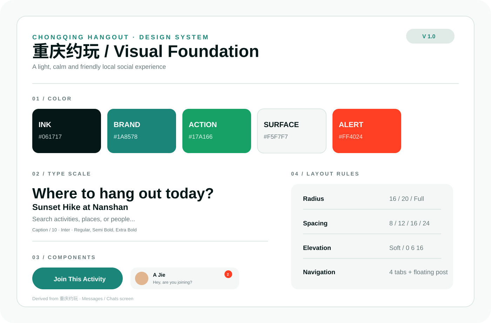

JIANG TINGXINGUI DESIGNER × AI WORKFLOW
Selected
Works
Design
For A Better Life.
Design that connects.
用设计，连接更好的生活。Connecting a better life through design.
MY UI
WORKFLOW
我的 UI 工作流
01 / 05
想做一个面向重庆年轻人的线下约玩产品，能快速找到附近活动和同好。
我会围绕“发现活动、建立连接、快速报名”构建核心体验。
EXTRACTED GOALSLocal discoveryActivity matchingSocial connection
请将这个方向转化为可快速验证的首页原型。
先确定“地点、兴趣、时间”三个信息优先级，再用可点击结构验证路径。
AI OUTPUTCore flowDiscover → Detail → JoinPrototype scopeHome / Filter / Activity / Profile
Home
Explore
Activity
Profile
Home
Auto wireframe review
PRODUCT BRIEFV1.0
Pet care, made
effortless.
Help new pet owners build a simple, reassuring daily care routine.
OBJECTIVEReduce uncertainty
PRIMARY USERFirst-time pet owners
→→
DiscoverBrowseJoin

123
Activity info hierarchy
Capacity & social proof
Primary action
01 / INPUT
需求文档
Requirement brief
将模糊想法整理为可执行的设计方向，明确用户、目标与边界。
OUTPUTUser needs / Business goals / Constraints